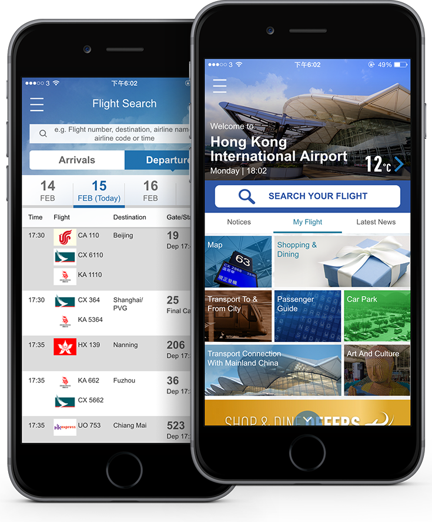

MOBILE APP
HKIA HKG My Flight App
Overview
Earning the recognition as the world's best airport 60 times and receiving numerous awards, Hong Kong International Airport (HKIA) has always been one of the outstanding and well-known airports in the world.
HKIA is dedicated to its commitments in optimizing operational efficiency and customer convenience. As one of the world's busiest passenger airports, HKIA is in need of a mobile application to optimize passenger experience, as well as delivering the real-time flight information to travelers. Powered by Amazon Web Services (AWS) which is the largest cloud service platform in the world, My Flight app is a manager in pocket to provide passengers with a wide array of information on the airport at ease.
HKIA is dedicated to its commitments in optimizing operational efficiency and customer convenience. As one of the world's busiest passenger airports, HKIA is in need of a mobile application to optimize passenger experience, as well as delivering the real-time flight information to travelers. Powered by Amazon Web Services (AWS) which is the largest cloud service platform in the world, My Flight app is a manager in pocket to provide passengers with a wide array of information on the airport at ease.

Overview
Earning the recognition as the world's best airport 60 times and receiving numerous awards, Hong Kong International Airport (HKIA) has always been one of the outstanding and well-known airports in the world.
HKIA is dedicated to its commitments in optimizing operational efficiency and customer convenience. As one of the world's busiest passenger airports, HKIA is in need of a mobile application to optimize passenger experience, as well as delivering the real-time flight information to travelers. Powered by Amazon Web Services (AWS) which is the largest cloud service platform in the world, My Flight app is a manager in pocket to provide passengers with a wide array of information on the airport at ease.
HKIA is dedicated to its commitments in optimizing operational efficiency and customer convenience. As one of the world's busiest passenger airports, HKIA is in need of a mobile application to optimize passenger experience, as well as delivering the real-time flight information to travelers. Powered by Amazon Web Services (AWS) which is the largest cloud service platform in the world, My Flight app is a manager in pocket to provide passengers with a wide array of information on the airport at ease.
Challenge
HKIA handled 63.3 million passenger trips in 2014. With 1,100 aircraft movements and over 100 airlines linking with about 180 destinations worldwide every day, HKIA is one of the world's busiest passenger airports. With such a great volume of passengers in the airport and rapid flow of information concerning gate changes, flight delays and special announcements, it is challenging for the airport to update every passenger with the latest news as passengers keep moving at different locations in such a big place. Passengers can only rely on information boards for their flights. They may spend long time checking out their own flights among the long flight lists. Missed flights and confusing navigation are the most common problems that passengers face. Everything is running fast in the airport, which brings much stress to travelers and staff and causes inefficiency in customer service.
Solution
To serve international visitors, travelers from the greater China and the locals, our mobile app “HKG My Flight” works in English, simplified Chinese and traditional Chinese. Passengers can search their flights on the main page. Bookmarking their flights, they can get their flight information such as the gate changes, departure time and terminals are all clearly at a glance. Airport special announcements and the latest status updates of the flight will be sent to them via push notification in real time.
HKG My Flight app is a reliable one-stop information center encompassing all a passenger needs to know for an air trip on palm. Maps showing airport facilities, shopping and dining directories, entertainment facilities, schedule of transportations, car park availability and passage guide are all covered. Passengers can either plan their journeys ahead or check out information they need in time. Hosting on Amazon Web Cloud Services, EC2 technology provides HKG My Flight app a virtual server in the cloud. EC2 is powering the app scalability, availability and cost effectiveness. While various data centers provided by Amazon enable thousands or more of passengers using the app smoothly at the same time, EC2 enables HKIA to scale up or down its capacity within minutes. Due to the unexpected ups and downs in number of users, on-demand instances allow our client to pay for the compute capacity they actually consume.
Apart from the necessary information, the latest news introducing new events and exhibitions in the airport is available on the home page to promote the vivacity of HKIA. Shopping and dining promotions are also listed out in-app, while sometimes they pop up as advertisements to draw users’ attention. This increases passengers’ exposure to retailer and product information.
"HKG My Flight" has obtained the Gold Award in the Mobile Application Stream of the Web Accessibility Recognition Scheme 2015. Serving as an information desk on the move, the app does not only help reduce pressure of the frontline, but also provides an all-round and accurate service to passengers, which fully represents HKIA’s professional spirit behind.
HKG My Flight app is a reliable one-stop information center encompassing all a passenger needs to know for an air trip on palm. Maps showing airport facilities, shopping and dining directories, entertainment facilities, schedule of transportations, car park availability and passage guide are all covered. Passengers can either plan their journeys ahead or check out information they need in time. Hosting on Amazon Web Cloud Services, EC2 technology provides HKG My Flight app a virtual server in the cloud. EC2 is powering the app scalability, availability and cost effectiveness. While various data centers provided by Amazon enable thousands or more of passengers using the app smoothly at the same time, EC2 enables HKIA to scale up or down its capacity within minutes. Due to the unexpected ups and downs in number of users, on-demand instances allow our client to pay for the compute capacity they actually consume.
Apart from the necessary information, the latest news introducing new events and exhibitions in the airport is available on the home page to promote the vivacity of HKIA. Shopping and dining promotions are also listed out in-app, while sometimes they pop up as advertisements to draw users’ attention. This increases passengers’ exposure to retailer and product information.
"HKG My Flight" has obtained the Gold Award in the Mobile Application Stream of the Web Accessibility Recognition Scheme 2015. Serving as an information desk on the move, the app does not only help reduce pressure of the frontline, but also provides an all-round and accurate service to passengers, which fully represents HKIA’s professional spirit behind.
Insight
Nowadays, as everyone has mobile devices which can get connected to the Wi-Fi in the airport easily, HKIA is in need of a mobile application acting as a channel to interact with passengers. Being informed with updates of their flights, passengers feel they are more in control of their journey, thus having more time at hand to shop and dine before their flights depart. Providing on-demand information that passengers used to ask can also alleviate the pressure the frontline staff are facing.